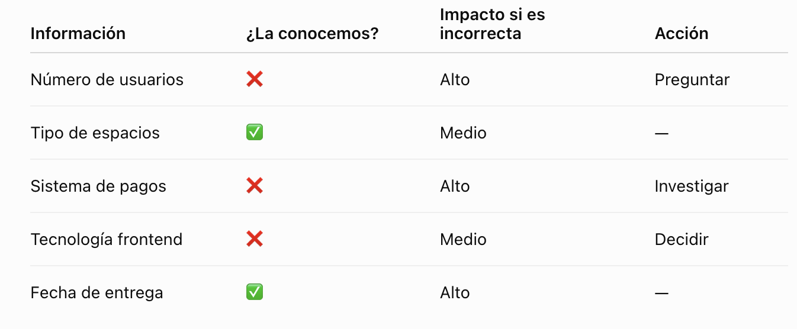
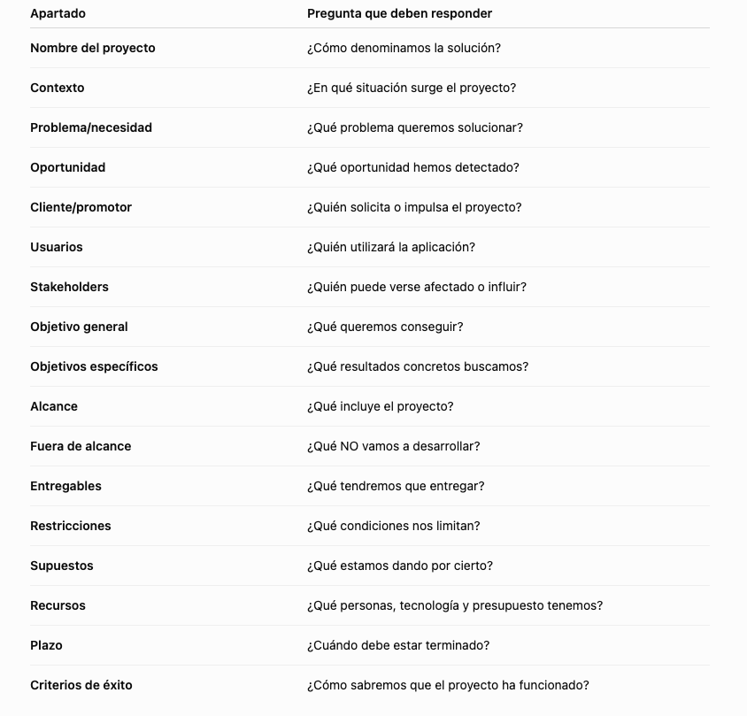
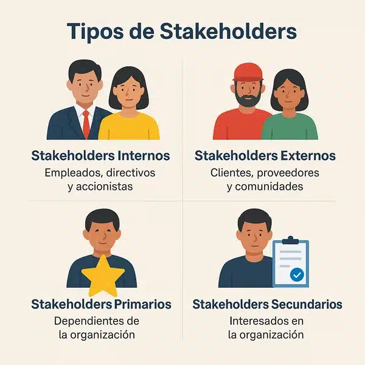
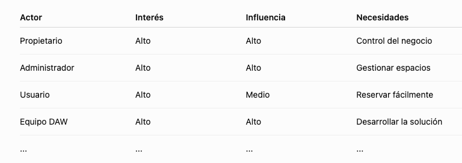
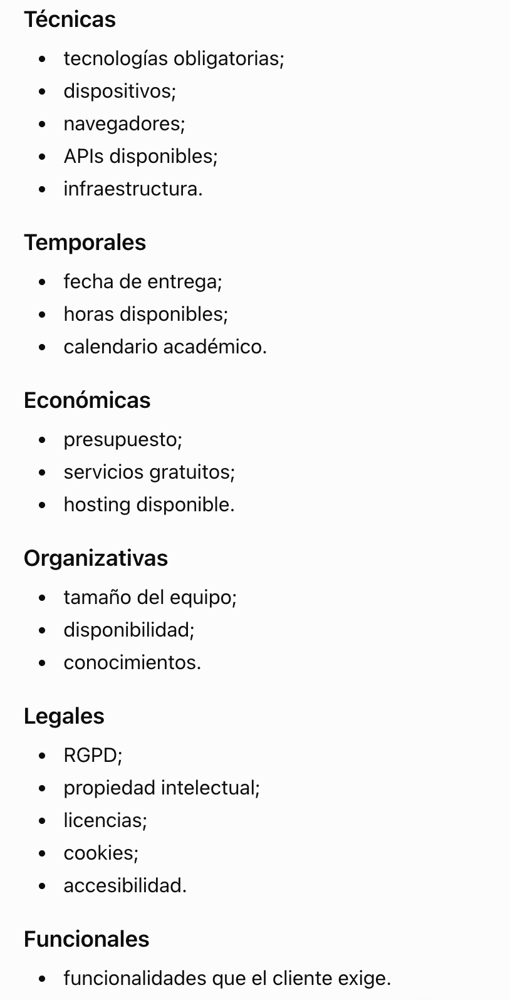
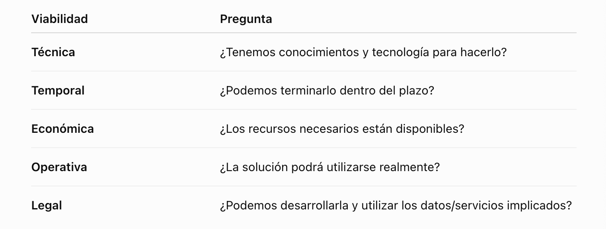
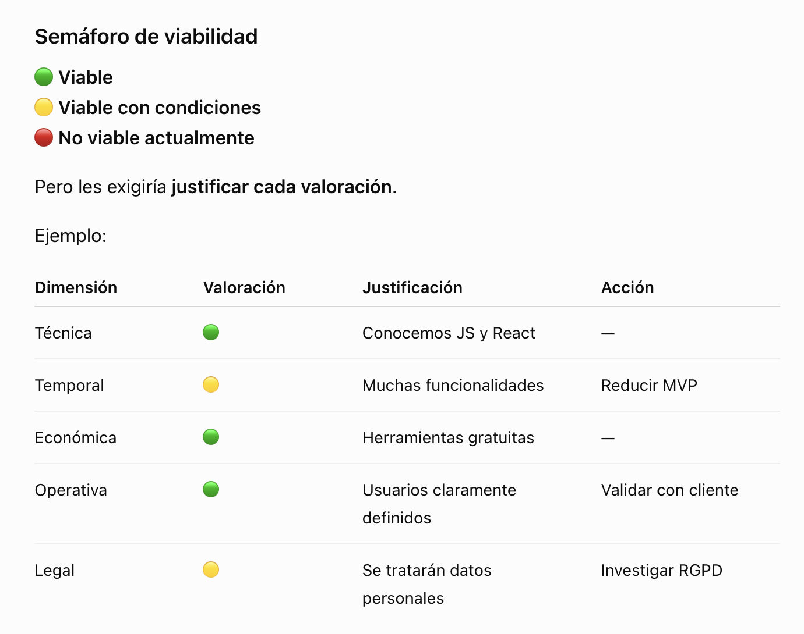

UD1 · Lab 1 · Del reto al briefing y la viabilidad
🧪 ¿Es viable nuestro proyecto?
Paso 1. Recibimos el reto
Paso 2. Descubrir información
Debemos identificar:
- Qué sabemos
- Qué no sabemos
- Qué necesitamos preguntar
- Qué estamos suponiendo
Vamos a realizar una matriz de incertidumbres:

Paso 3. Elaborar Briefing
Construimos:
contexto→problema→actores→objetivos→alcance→entregables→restricciones→recursos→plazo→éxito
Paso 4. Analizar viabilidad
Realizar tabla:
Técnica / temporal / económica / operativa / legal
Paso 5 - IA como “auditor”
Pasarás tu briefing a la IA pidiéndole algo como esto:
“Actúa como consultor de proyectos software. Revisa nuestro briefing. Identifica información ambigua, objetivos mal definidos, restricciones no contempladas, riesgos y preguntas que deberíamos realizar antes de iniciar el desarrollo. No propongas soluciones todavía.”
Debes analizar la respuesta y guardar el prompt que le pides en un md en la carpeta docs
Paso 6. Resultado de la sesión
proyecto-coworking/
│
├── README.md
│
└── docs/
├── briefing.md
├── viabilidad.md
├── incertidumbres.md
└── ia-prompt.md
📜 Documentación Anexo
Objetivo
💡 Deberás ser capaz de transformar una idea o necesidad inicial en un briefing de proyecto suficientemente claro y realizar un primer análisis de viabilidad antes de >empezar a desarrollar.
Briefing
💡 ¿Qué tenemos que hacer y para quién?
Plantilla de un Briefing

Identificación de actores
Debemos introducir stakeholders de forma muy visual.

Por ejemplo:

Objetivos
Por ejemplo:
“Desarrollar una plataforma web para gestionar reservas de espacios de coworking”
Sería un objetivo/alcance, mientras que:
“Aplicación web desplegada + documentación + manual de usuario”
son entregables.
Debemos redactarlos de forma detallada y que no sean objetivos generales ni ambiguos.
Un objetivo como:
“Hacer una aplicación moderna.”
es demasiado ambiguo.
Mejor:
“Desarrollar una aplicación web que permita a los usuarios consultar la disponibilidad de los espacios y realizar reservas.”
Y podemos introducir el concepto de SMART sin convertirlo en teoría empresarial:
- Specific
- Measurable
- Achievable
- Relevant
- Time-bound
No hace falta que todos los objetivos sean perfectamente SMART, pero sí que aprendamos a preguntarnos:
¿Cómo sabremos que hemos conseguido el objetivo?
Restricciones
💡 ¿Qué podría impedir que nuestro proyecto se realizase como inicialmente lo imaginamos?
Tenemos que buscar restricciones de diferentes tipos:

Viabilidad del proyecto
💡 La viabilidad no es si/no. También sirve para detectar qué tenemos que cambiar antes de empezar.
En esta fase buscamos una viabilidad inicial.
Utilizamos cinco dimensiones:


MVP: Producto mínimo viable
RGPD: Reglamento General de Protección de Datos
Herramientas que vamos a utilizar
🧠 Para pensar y documentar
Markdown + Github
/docs/briefing.md
/docs/viabilidad.md💡 La documentación va a formar parte del repositorio del proyecto y queda versionada
📋 Para organizar
Github Proyects
Todavía no vamos a tener un Product Backlog completo. Pero en esta sesión podemos:
Ideas → Análisis → Viable/No Viable
🤖 Para IA
Introduciría la IA con un papel concreto: IA como consultor, no responsable de la decisión.
IA propone → equipo comprueba → equipo acepta/rechaza → equipo documenta